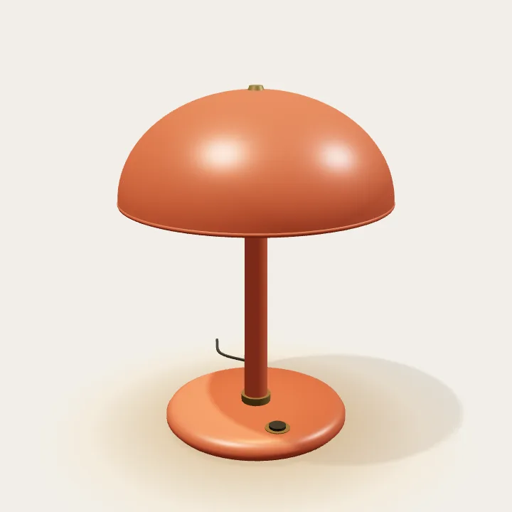

Kaynak → Sahne → Web
Hareketin
malzemesi.
Bir bileşen seç. Sahneni tarif et.
Videoyu sayfanın bir parçasına dönüştür.
React Bits ve 21st.dev gibi kaynakları projenin diliyle birleştir. 3D film için prompt hazırla; videoyu arka planda veya kaydırmayla ilerleyen kareler halinde kullan.
01 / Başlangıç noktası
Kaynağı seç.
02 / Sahneye yön ver
Neyi göstereceğiz?
Kamera, malzeme ve hareket aynı fikri anlatsın.
ChatGPT’ye yapıştır
Video istediğinde düğmeye bas. Masaüstü ve mobil için ayrı çekim tarifleri hazırlanır; hiçbir servise otomatik istek gönderilmez.
03 / Filmden web’e
Videona yer aç.
Arka plan için yerel bir video seç. Scroll için video dönüştürme komutuyla üretilen klasörü aç. Dosyalar bu önizlemede bilgisayarında kalır.
48 karelik lamba örneği hazır. Aşağı kaydır veya kare kontrolünü kullan.

1 / 48
Önizlemeyi atla ↓